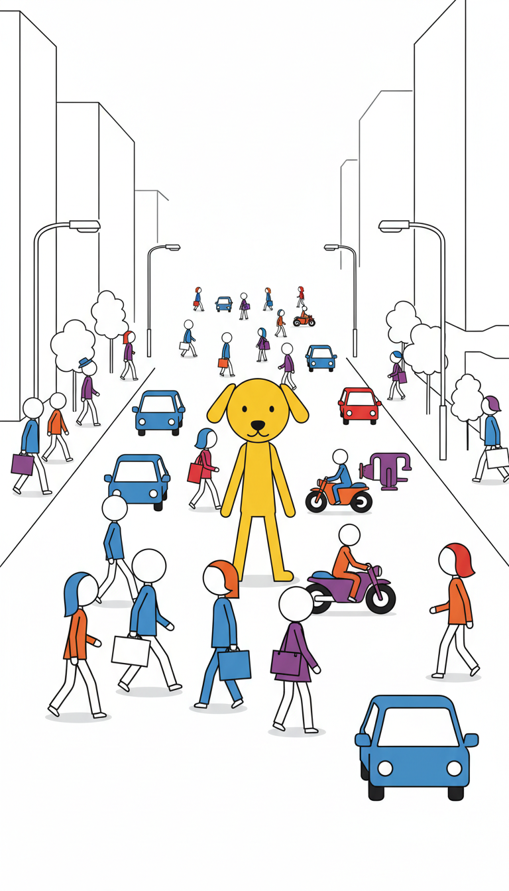

claude
Video estilo Claude
Visual claro, flat, fundo branco, traço limpo e linguagem corporate memphis.
Abrir imagem
Prompt usado
Create a single strong frame for a short-form video. A bright yellow dog stands out in the middle of a busy city avenue packed with cars, motorcycles, and many people crossing and walking. The yellow dog must be the clear focal point. Urban street energy, readable subject separation, no text, no logos, no watermark, one decisive moment. Style preset: Video estilo Claude. All shots must stay compatible with a minimalist stick figure illustration style: thin black line art, large round heads, long thin limbs, flat solid color accents, clean white or light gray background. Think corporate memphis meets stick figure animation. simple stick figure character with thin black lines, one large round head with minimal facial expression, exactly two arms, exactly two hands, exactly two legs, exactly two feet, long thin limbs, no detailed features, clean outline drawing style, expressive body posture, no extra limbs, no duplicate hands, no duplicate arms flat vector illustration, stick figure art, corporate memphis style, minimalist line art, solid flat colors, clean black outlines, white background, 2d vector art, simple geometric shapes, editorial illustration, no gradients, no shadows, no photorealism, high contrast, explanatory diagram style consistent visual identity across all scenes, same stick figure design, same thin black line weight, same flat white background treatment, same colorful corporate memphis palette, same clean editorial composition language single clear focal character, one main action only, one consistent scene only, clean readable silhouette, anatomically consistent stick figure with one head, two arms, two hands, two legs, simple supporting objects, show the action literally, not symbolically, no text clean white or very light gray background, no dark backgrounds, no colored backgrounds, no complex scenery objects drawn as simple flat colored icons or minimal line art shapes if small icons or symbols surround the character, draw them as tiny flat colored pictograms floating nearby Lighting: clean high-contrast lighting on a white background. Keep the same scene intent across styles so only the visual language changes.